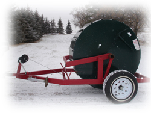
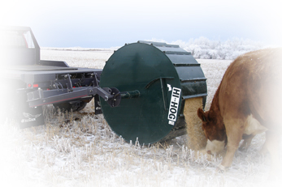
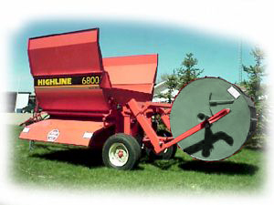

 |
The Nifty Feed Dispenser allows one person with a round bale handler, 3 PTH tractor, or Trailer style feeder, to load, transport and dispense grain, cake feed, pellets or supplements to livestock under range feeding conditions. |
Features of the Nifty Feed Dispenser include:
• easy to load
• easy to feed
• ideal automatic cake feeder
• dispenses feed at 15 foot intervals
• reduces feed loss and dust
• works well with most truck-mounted round bale handlers
• easily adapts to bale processors or 3-point hitch units
• adjustable door and baffled interior permits mixing of supplements with feed
• delivers enough supplement for up to 250 head in one trip
• self-contained trailer units
The diameter of the drum corresponds to the size of a round bale, and the volume of the drum allows for a loaded weight similar to a densely packed round bale. This matches the lifting capacity of the round bale handler, and the weight packs the snow into a 30 inch wide trough to avoid waste. The cleated circumference of the drum provides for sufficient traction to rotate the drum when it contacts the ground.
The Nifty Feed Dispenser is used by various livestock producers, ranging
from cattle, bison, elk, and horses. It is suitable for a variety of uses
in the livestock industry, from winter and summer supplementing, pre-breeding
conditioning, to extending pasture during drought conditions. Ideal
automatic cake feeder system, which can serve as a mixing drum to distribute er protein or mineral with the grain.
Nifty Livestock Equipment Ltd.
1999-2005
About Nifty / Feed Equipment / Livestock ID / Handling Equipment / Dealers Page / Contact Us